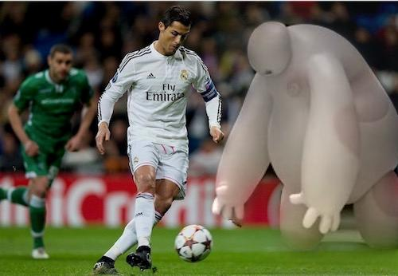
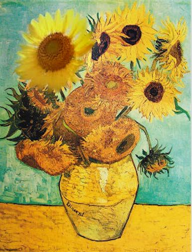
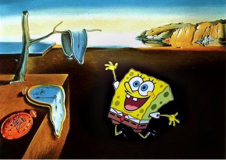

Wenyan Bi
Copy and Paste Blending
Following images show comparisons betwteen laplacian pyramids blending method(left) and copy and paste blending method(right).
Copy and paste blending is done using the algorithm: Blended image= mask*Source+(1-mask)*Target.






Two-band blending
To do two-band blending, I first separate the low pass (using a large Gaussian filter) and high pass (original image-low pass) information. This process is done in Fourier domain.
For low pass image, using alpha blending: blended image=smoothed mask*Source+(1-mask)*Target. For high pass image, using binary blending (copy and paste): Blended image= mask*Source+(1-mask)*Target.
Following comparisons are the classical "orange & apple blending". The left is done by copy and paste blending, the center is done by Laplacian pyramids blending, and the right is done by two-band blending.
Copy and Paste Laplacian Pyramids two-band
Discussion of the three methods
Copy and paste: "worst method", with easily detective blending boundaries.
Laplacian pyramids: "best method", with almost seamless blending boundaries. Still, it has two shortages. 1) When the backgrounds of the target image and source image are very different, this method is not suitable (it will create clear boundaries). 2) When the size of the pyramids (e.g. Gaussian pyramid level 9) is smaller than the Gaussian kernel, it will lose some low-pass information.
2-band blending: Compared to "copy and paste", this method will make boundaries less discernible. Compared to "Laplacian pyramids", this method will "sharpen" the boundaries.
Copy and Paste Laplacian Pyramids two-band